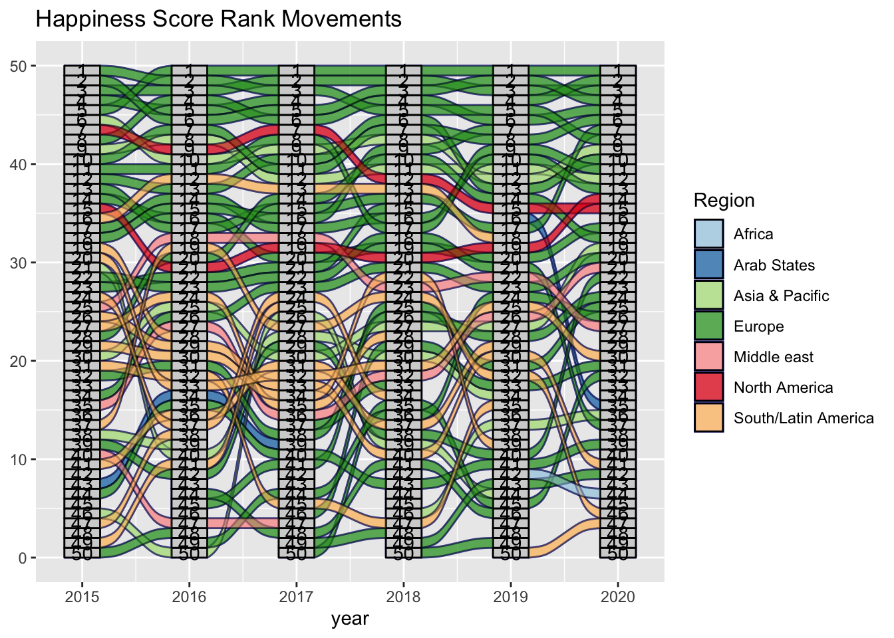

Chapter 5 Results
5.2 General Life Ladder Trend
5.2.1 Trend by Time
- Alluvium data transformation

5.2.2 Trend by Geo
5.2.3 Trend by Development Level
5.3 COVID-19 Impact
5.3.1 Comparison between Time (Pre and Post Pandemic)
We decide to use data averaged from 2017 to 2019 to represent the general life happiness score before the COVID-19 pandemic, and compare it to the 2020 happiness score. The difference between happiness score is the following: